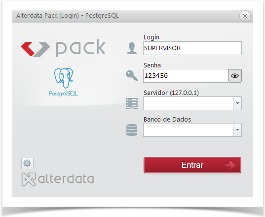
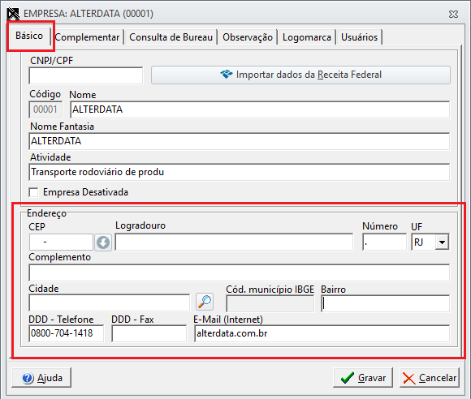
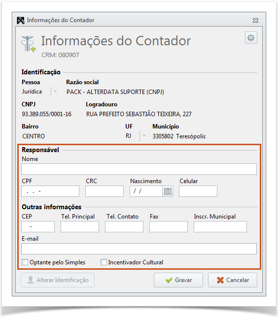
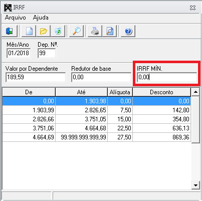

WPHD (Web Prático Home Desktop) é um dos sistemas da Alterdata
Software, usado principalmente por empresas contábeis e departamento
pessoal. Hoje eu vou me aprofundar um pouco mais na parte de
“Empresas” dentro do sistema.
Essa é a área onde o contador ou o escritório gerencia todas as
empresas clientes, podendo visualizar, editar e organizar informações
de cada uma. Também é possível definir permissões de acesso e publicar
documentos, como holerites, informes de rendimento e rescisões.
O sistema é integrado a Folha da Alterdata, o que facilita o envio dos
dados e evita retrabalho. De forma geral, o módulo “Empresas” funciona
como um painel de controle, onde tudo fica centralizado, organizado e
acessível tanto para o contador quanto para os clientes.
Como baixar e instalar o sistema?
Ao clicar na imagem acima, você será direcionado para a página de
download do Alterdata Installer. Ao logar com o seu passaporte ou
código do cliente, o installer da Alterdata irá mostrar os produtos
disponíveis para instalação.
Após marcar o(s) produto(s), você será direcionado para o contrato de
licença temporária e implantação de software, que deverá ser lido e
concordado para seguir com a instalação.
Depois de concordar com os termos do contrato, você será direcionado
para "Banco de dados", onde você terá que escolher o que será
instalado. Sendo as opções:
"Sistemas e banco de dados" ou "Somente os sistemas"
Após escolher o método de instalação, você será direcionado para a
parte de restaurar backup, onde poderá escolher entre as seguintes
opções:
"Quero restaurar o backup da minha base" ou "Quero utilizar a base
padrão da Alterdata"
e conclua a instalação.
Como cadastrar uma empresa no sistema?

Para cadastrar uma empresa no WPHD, siga os passos abaixo:
- Acesse o módulo “Empresas” no menu principal do Wphd.
- Clique no botão “Novo Cadastro”.
-
Preencha os campos obrigatórios, como CNPJ, Nome, Cep, Valor
Capital, etc.
-
Após preencher os dados, revise as informações para garantir que
estão corretas e clique no botão "Gravar"
Após o cadastro, a empresa estará disponível na lista de empresas do
WPHD, e você poderá gerenciar suas informações conforme necessário.
Como cadastrar sócios no sistema?
 Os sócios de uma empresa são as pessoas que participam da sua criação
e administração, investindo dinheiro, bens ou trabalho para que o
negócio funcione. Para adicionar um sócio no sistema, siga os passos
abaixo:
Os sócios de uma empresa são as pessoas que participam da sua criação
e administração, investindo dinheiro, bens ou trabalho para que o
negócio funcione. Para adicionar um sócio no sistema, siga os passos
abaixo:
- Acesse o módulo “Sócios” no menu principal do WPHD.
-
Clique em “Novo cadastro” e preencha os campos da aba “Básico” com
endereço e contato.
-
Preencha os campos da aba “Complementar” com nome completo,
documentos e dados do nascimento.
-
Por fim preencha os campos da aba “Declarações” com eSocial e
carteira de trabalho.
-
Após preencher os dados, revise as informações para garantir que
estão corretas e clique no botão "Gravar"
Obs: Na aba “Empresas vinculadas” o cliente consegue ver todas as
empresas que o sócio está vinculado, % capital e se é o responsável
pelo CNPJ.
Como fazer o backup dos sistemas?
 É importante sempre estar com o backup em dia, pois se for preciso rodar
um comando ou algo relacionado, não ocorrerá o risco de perder todas as
informações. Para realizar o backup basta seguir os passos abaixo:
É importante sempre estar com o backup em dia, pois se for preciso rodar
um comando ou algo relacionado, não ocorrerá o risco de perder todas as
informações. Para realizar o backup basta seguir os passos abaixo:
- No módulo “Manutenção” vá até “Backup dos sistemas”.
- Na aba "Início" clique em "Fazer Backup."
-
Para alterar o diretório do backup, basta clicar em "Editar" no
"Agrupamento Armazenamento", ao lado de "Seu backup está em:"
-
Em seguida, basta clicar em "Editar" e selecionar a pasta que
receberá o arquivo.

-
Caso queira deixar o backup agendado basta clicar em “Geral”,
depois em “Backup automático”, selecionar o horário e os dias que
desejar, depois clicar em “Salvar”.
-
Caso queira contratar o armazenamento em nuvem para não utilizar o
disco local, basta clicar em “Contratar agora” e escolher o plano
que desejar.

Quando a pessoa entra em contato com a alterdata para contratar um
Software, ela fornece algumas informações e essas informações de
identificação o sistema já deixa salvo. Porém temos que ter um
responsável com CRC válido cadastrado no sistema e para isso basta
seguir os passos abaixo:
-
Acesse “Informações do contador” no módulo “Cadastro” do WPHD.
-
Preencha os campos solicitados, como o nome, e-mail e o CRC do
contador responsável.
-
Após preencher os campos necessários, revise as informações para
garantir que estão corretas e clique no botão "Gravar". Após o
cadastro, as informações do contador já estarão salvas e
disponíveis.

A tabela de IRRF (Imposto de Renda Retido na Fonte) é atualizada
automaticamente pelo sistema PHD, mas é importante verificar se os
valores estão corretos para garantir o cálculo certo da folha de
pagamento. Para verificar a tabela de IRRF, basta seguir os seguintes
passos:
- Acesse o WPHD e vá até a aba Cadastro.
- Escolha a opção IRRF.
-
Confira o Mês/Ano, o Valor por Dependente e o IRRF Mínimo, se tudo
estiver correto, clique em "Gravar".
É importante verificar pois evita erros nos cálculos da folha, mantém a
empresa em conformidade com as regras fiscais e garante que os descontos
de IRRF sejam aplicados corretamente.